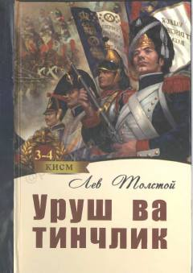

UVLev Tolstoyning mashhur epopeya romanining 3 va 4-qismlari.
Lev Tolstoyning ushbu mashhur romani Napoleon urushlari davridagi Rossiya jamiyatining hayotini tasvirlaydi. Mazkur nashr asarning 3 va 4-kitoblarini o'z ichiga olib, unda qahramonlarning taqdiri va tarixiy voqealar o'zaro bog'liq holda yoritilgan.